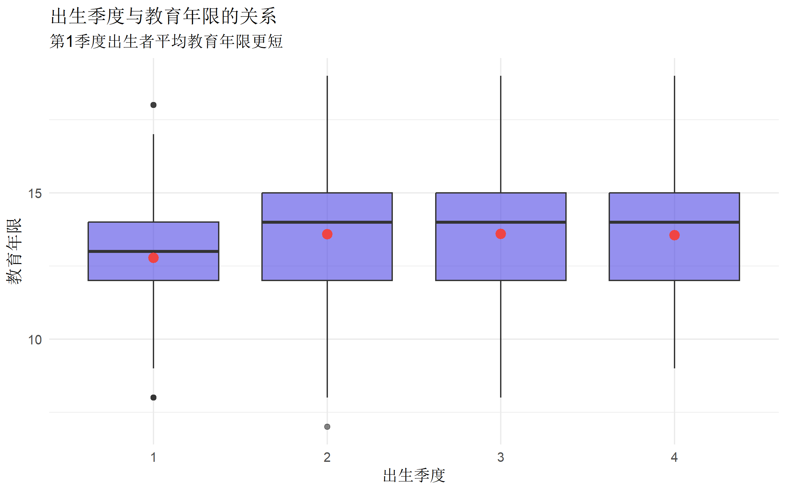

# 核心包
library(AER) # 经典 2SLS 实现
library(ivreg) # 现代 IV 回归
library(estimatr) # 稳健标准误
library(modelsummary) # 结果展示
# 辅助包
library(tidyverse)
library(broom)
library(ggplot2)
theme_set(theme_minimal(base_size = 12))工具变量法完全指南
统计分析方法
因果推断
计量经济学
什么是工具变量法
工具变量法（Instrumental Variables, IV） 是计量经济学和流行病学中解决内生性问题的核心方法。当解释变量与误差项相关时，普通最小二乘法（OLS）估计会产生偏误，此时工具变量法可以帮助我们识别因果效应。
内生性问题的来源
| 来源 | 描述 | 例子 |
|---|---|---|
| 遗漏变量偏误 | 存在未观测的混杂因素 | 研究教育对收入的影响时，能力无法观测 |
| 测量误差 | 自变量存在系统性测量误差 | 自报的饮食摄入量不准确 |
| 同时性偏误 | 因变量反向影响自变量 | 价格与需求相互影响 |
| 样本选择偏误 | 样本非随机选取 | 只观察到在职人群的工资 |
工具变量的三大条件
一个有效的工具变量 \(Z\) 必须满足：
| 条件 | 名称 | 含义 | 检验方法 |
|---|---|---|---|
| 相关性 | Relevance | \(Z\) 与内生变量 \(X\) 相关：\(Cov(Z, X) \neq 0\) | F 统计量 > 10 |
| 外生性 | Exogeneity | \(Z\) 与误差项不相关：\(Cov(Z, \epsilon) = 0\) | 无法直接检验，需理论论证 |
| 排他性 | Exclusion | \(Z\) 只通过 \(X\) 影响 \(Y\) | 无法直接检验，需理论论证 |
IV 与其他方法的比较
| 方法 | 解决的问题 | 假设要求 | 适用场景 |
|---|---|---|---|
| OLS | - | 严格外生性 | 无内生性问题 |
| PSM | 可观测混杂 | 条件独立性 | 混杂可测量 |
| IV | 不可观测混杂 | 有效工具变量 | 存在外生变异来源 |
| RDD | 内生性 | 断点处随机化 | 存在政策断点 |
| DiD | 不可观测异质性 | 平行趋势 | 政策前后对照 |
R 包安装与加载
两阶段最小二乘法 (2SLS)
原理
2SLS 是实现 IV 估计的标准方法，分为两个阶段：
第一阶段（First Stage）：用工具变量预测内生变量 \[X = \pi_0 + \pi_1 Z + \nu\]
第二阶段（Second Stage）：用预测值替代内生变量 \[Y = \beta_0 + \beta_1 \hat{X} + \epsilon\]
其中 \(\hat{X}\) 是第一阶段的拟合值，\(\beta_1\) 就是我们要估计的因果效应。
数学推导
IV 估计量可以表示为： \[\hat{\beta}_{IV} = \frac{Cov(Z, Y)}{Cov(Z, X)} = \frac{\sum(Z_i - \bar{Z})(Y_i - \bar{Y})}{\sum(Z_i - \bar{Z})(X_i - \bar{X})}\]
实战案例：教育回报率估计
经典问题：多接受一年教育能增加多少收入？
直接回归存在问题：能力高的人既更可能接受更多教育，也更可能获得高收入。能力是未观测的混杂因素。
解决方案：使用出生季度作为工具变量（Angrist & Krueger, 1991 的经典研究设计）。
模拟数据
# 模拟教育回报率数据
set.seed(2024)
n <- 2000
# 生成数据
sim_data <- tibble(
id = 1:n,
# 未观测的能力（混杂因素）
ability = rnorm(n, 0, 1),
# 工具变量：出生季度（1-4季度）
# 假设第1季度出生的人平均受教育年限更短（因为入学年龄规定）
birth_quarter = sample(1:4, n, replace = TRUE),
# 父母教育水平（控制变量）
parent_edu = round(rnorm(n, 12, 3)),
# 教育年限（内生变量）
# 受能力、父母教育、出生季度影响
education = 10 +
0.5 * ability + # 能力影响教育
0.3 * parent_edu + # 家庭背景影响
-0.8 * (birth_quarter == 1) + # Q1出生者教育更少
rnorm(n, 0, 1.5),
# 收入（结局变量）
# 真实因果效应：每多一年教育增加收入 0.08 (8%)
log_income = 2 +
0.08 * education + # 真实处理效应
0.3 * ability + # 能力影响收入（混杂）
0.02 * parent_edu +
rnorm(n, 0, 0.3)
)
# 使教育年限合理化
sim_data <- sim_data %>%
mutate(
education = pmax(6, pmin(education, 22)),
education = round(education)
)
head(sim_data)# A tibble: 6 × 6
id ability birth_quarter parent_edu education log_income
<int> <dbl> <int> <dbl> <dbl> <dbl>
1 1 0.982 3 12 15 3.72
2 2 0.469 3 13 14 3.30
3 3 -0.108 1 14 11 3.47
4 4 -0.213 3 11 14 3.49
5 5 1.16 1 12 14 3.52
6 6 1.29 1 15 15 3.69问题演示：OLS 偏误
# 朴素 OLS 回归（有偏）
ols_naive <- lm(log_income ~ education, data = sim_data)
# 控制父母教育的 OLS（仍有偏）
ols_control <- lm(log_income ~ education + parent_edu, data = sim_data)
# 如果能观测能力，则无偏（作为参照）
ols_true <- lm(log_income ~ education + parent_edu + ability, data = sim_data)
# 比较结果
modelsummary(
list(
"OLS (朴素)" = ols_naive,
"OLS (控制变量)" = ols_control,
"OLS (完美控制)" = ols_true
),
coef_rename = c(
"education" = "教育年限",
"parent_edu" = "父母教育",
"ability" = "能力"
),
gof_omit = "IC|Log|F|RMSE",
title = "OLS 回归结果比较"
)| OLS (朴素) | OLS (控制变量) | OLS (完美控制) | |
|---|---|---|---|
| (Intercept) | 1.520 | 1.515 | 2.006 |
| (0.069) | (0.069) | (0.052) | |
| 教育年限 | 0.134 | 0.130 | 0.077 |
| (0.005) | (0.006) | (0.004) | |
| 父母教育 | 0.004 | 0.022 | |
| (0.004) | (0.003) | ||
| 能力 | 0.306 | ||
| (0.007) | |||
| Num.Obs. | 2000 | 2000 | 2000 |
| R2 | 0.258 | 0.258 | 0.602 |
| R2 Adj. | 0.257 | 0.257 | 0.601 |
解读： - 朴素 OLS 估计的教育回报率约为 0.10，高于真实值 0.08 - 这是因为能力同时影响教育和收入，造成向上偏误 - 即使控制父母教育，偏误仍然存在
第一阶段：检验工具变量相关性
# 检查工具变量与内生变量的关系
first_stage <- lm(education ~ birth_quarter + parent_edu, data = sim_data)
summary(first_stage)
Call:
lm(formula = education ~ birth_quarter + parent_edu, data = sim_data)
Residuals:
Min 1Q Median 3Q Max
-5.682 -1.079 0.020 1.056 5.696
Coefficients:
Estimate Std. Error t value Pr(>|t|)
(Intercept) 9.09278 0.16625 54.69 <2e-16 ***
birth_quarter 0.26570 0.03156 8.42 <2e-16 ***
parent_edu 0.30179 0.01165 25.90 <2e-16 ***
---
Signif. codes: 0 '***' 0.001 '**' 0.01 '*' 0.05 '.' 0.1 ' ' 1
Residual standard error: 1.59 on 1997 degrees of freedom
Multiple R-squared: 0.2672, Adjusted R-squared: 0.2665
F-statistic: 364.1 on 2 and 1997 DF, p-value: < 2.2e-16# 按出生季度查看平均教育年限
sim_data %>%
group_by(birth_quarter) %>%
summarise(
n = n(),
mean_edu = mean(education),
sd_edu = sd(education)
)# A tibble: 4 × 4
birth_quarter n mean_edu sd_edu
<int> <int> <dbl> <dbl>
1 1 518 12.8 1.77
2 2 462 13.6 1.82
3 3 517 13.6 1.86
4 4 503 13.5 1.85# 可视化工具变量与教育的关系
ggplot(sim_data, aes(x = factor(birth_quarter), y = education)) +
geom_boxplot(fill = "#4f46e5", alpha = 0.6) +
stat_summary(fun = mean, geom = "point", color = "#ef4444", size = 3) +
labs(
title = "出生季度与教育年限的关系",
subtitle = "第1季度出生者平均教育年限更短",
x = "出生季度",
y = "教育年限"
)
2SLS 回归
# 方法1：使用 AER 包的 ivreg
iv_aer <- ivreg(
log_income ~ education + parent_edu | birth_quarter + parent_edu,
data = sim_data
)
summary(iv_aer, diagnostics = TRUE)
Call:
ivreg(formula = log_income ~ education + parent_edu | birth_quarter +
parent_edu, data = sim_data)
Residuals:
Min 1Q Median 3Q Max
-1.415472 -0.294272 -0.001581 0.295888 1.472001
Coefficients:
Estimate Std. Error t value Pr(>|t|)
(Intercept) 2.03785 0.31712 6.426 1.63e-10 ***
education 0.07696 0.03213 2.395 0.0167 *
parent_edu 0.02008 0.01010 1.989 0.0469 *
Diagnostic tests:
df1 df2 statistic p-value
Weak instruments 1 1997 70.900 <2e-16 ***
Wu-Hausman 1 1996 2.976 0.0846 .
Sargan 0 NA NA NA
---
Signif. codes: 0 '***' 0.001 '**' 0.01 '*' 0.05 '.' 0.1 ' ' 1
Residual standard error: 0.4301 on 1997 degrees of freedom
Multiple R-Squared: 0.2269, Adjusted R-squared: 0.2261
Wald test: 96.26 on 2 and 1997 DF, p-value: < 2.2e-16 # 方法2：使用 ivreg 包（语法更清晰）
iv_model <- ivreg(
log_income ~ education + parent_edu | birth_quarter + parent_edu,
data = sim_data
)
# 方法3：使用 estimatr 包（稳健标准误）
iv_robust <- iv_robust(
log_income ~ education + parent_edu | birth_quarter + parent_edu,
data = sim_data,
se_type = "HC2"
)
summary(iv_robust)
Call:
iv_robust(formula = log_income ~ education + parent_edu | birth_quarter +
parent_edu, data = sim_data, se_type = "HC2")
Standard error type: HC2
Coefficients:
Estimate Std. Error t value Pr(>|t|) CI Lower CI Upper DF
(Intercept) 2.03785 0.32009 6.366 2.393e-10 1.4101073 2.66560 1997
education 0.07696 0.03240 2.375 1.762e-02 0.0134227 0.14049 1997
parent_edu 0.02008 0.01017 1.973 4.861e-02 0.0001229 0.04003 1997
Multiple R-squared: 0.2269 , Adjusted R-squared: 0.2261
F-statistic: 93.17 on 2 and 1997 DF, p-value: < 2.2e-16结果比较
# 汇总比较
modelsummary(
list(
"OLS (有偏)" = ols_control,
"IV (2SLS)" = iv_model,
"IV (稳健SE)" = iv_robust
),
coef_rename = c(
"education" = "教育年限",
"parent_edu" = "父母教育"
),
gof_omit = "IC|Log|RMSE",
title = "OLS vs IV 估计结果",
notes = "真实因果效应 = 0.08"
)| OLS (有偏) | IV (2SLS) | IV (稳健SE) | |
|---|---|---|---|
| 真实因果效应 = 0.08 | |||
| (Intercept) | 1.515 | 2.038 | 2.038 |
| (0.069) | (0.317) | (0.320) | |
| 教育年限 | 0.130 | 0.077 | 0.077 |
| (0.006) | (0.032) | (0.032) | |
| 父母教育 | 0.004 | 0.020 | 0.020 |
| (0.004) | (0.010) | (0.010) | |
| Num.Obs. | 2000 | 2000 | 2000 |
| R2 | 0.258 | 0.227 | 0.227 |
| R2 Adj. | 0.257 | 0.226 | 0.226 |
| F | 347.213 | ||
关键发现： - IV 估计量（约 0.08）接近真实因果效应 - OLS 估计量（约 0.10）由于遗漏变量而向上偏倚 - IV 标准误通常大于 OLS，这是正常的
IV 诊断检验
弱工具变量检验
弱工具变量会导致： - 估计量偏向 OLS - 标准误被低估 - 假设检验失效
检验方法：第一阶段 F 统计量
# 提取第一阶段 F 统计量
summary(iv_aer, diagnostics = TRUE)
Call:
ivreg(formula = log_income ~ education + parent_edu | birth_quarter +
parent_edu, data = sim_data)
Residuals:
Min 1Q Median 3Q Max
-1.415472 -0.294272 -0.001581 0.295888 1.472001
Coefficients:
Estimate Std. Error t value Pr(>|t|)
(Intercept) 2.03785 0.31712 6.426 1.63e-10 ***
education 0.07696 0.03213 2.395 0.0167 *
parent_edu 0.02008 0.01010 1.989 0.0469 *
Diagnostic tests:
df1 df2 statistic p-value
Weak instruments 1 1997 70.900 <2e-16 ***
Wu-Hausman 1 1996 2.976 0.0846 .
Sargan 0 NA NA NA
---
Signif. codes: 0 '***' 0.001 '**' 0.01 '*' 0.05 '.' 0.1 ' ' 1
Residual standard error: 0.4301 on 1997 degrees of freedom
Multiple R-Squared: 0.2269, Adjusted R-squared: 0.2261
Wald test: 96.26 on 2 and 1997 DF, p-value: < 2.2e-16 判断标准： - F > 10：工具变量强度可接受 - F > 20：工具变量较强 - F < 10：存在弱工具变量问题
# 手动计算第一阶段 F 统计量
first_stage_full <- lm(education ~ birth_quarter + parent_edu, data = sim_data)
first_stage_reduced <- lm(education ~ parent_edu, data = sim_data)
# F 检验
anova(first_stage_reduced, first_stage_full)Analysis of Variance Table
Model 1: education ~ parent_edu
Model 2: education ~ birth_quarter + parent_edu
Res.Df RSS Df Sum of Sq F Pr(>F)
1 1998 5228.4
2 1997 5049.2 1 179.26 70.9 < 2.2e-16 ***
---
Signif. codes: 0 '***' 0.001 '**' 0.01 '*' 0.05 '.' 0.1 ' ' 1内生性检验 (Wu-Hausman)
检验是否真的需要使用 IV：\(H_0\): 变量是外生的
# Wu-Hausman 检验已包含在 summary 诊断中
# 如果 p < 0.05，拒绝外生性假设，应使用 IV过度识别检验 (Sargan/Hansen J)
当工具变量数量 > 内生变量数量时，可以检验工具变量的有效性。
# 使用多个工具变量的例子
# 假设我们有两个工具变量
sim_data <- sim_data %>%
mutate(
# 第二个工具变量：距离最近大学的距离
distance_college = abs(rnorm(n, 50, 20)) +
10 * (birth_quarter == 1),
# 距离影响教育
education_v2 = education - 0.02 * distance_college
)
# 过度识别的 IV 回归
iv_overid <- ivreg(
log_income ~ education + parent_edu |
birth_quarter + distance_college + parent_edu,
data = sim_data
)
summary(iv_overid, diagnostics = TRUE)
Call:
ivreg(formula = log_income ~ education + parent_edu | birth_quarter +
distance_college + parent_edu, data = sim_data)
Residuals:
Min 1Q Median 3Q Max
-1.402945 -0.294087 -0.003928 0.293737 1.464658
Coefficients:
Estimate Std. Error t value Pr(>|t|)
(Intercept) 2.00038 0.31399 6.371 2.33e-10 ***
education 0.08078 0.03181 2.540 0.0112 *
parent_edu 0.01893 0.01000 1.893 0.0585 .
Diagnostic tests:
df1 df2 statistic p-value
Weak instruments 2 1996 35.970 4.5e-16 ***
Wu-Hausman 1 1996 2.603 0.107
Sargan 1 NA 0.990 0.320
---
Signif. codes: 0 '***' 0.001 '**' 0.01 '*' 0.05 '.' 0.1 ' ' 1
Residual standard error: 0.4289 on 1997 degrees of freedom
Multiple R-Squared: 0.2312, Adjusted R-squared: 0.2304
Wald test: 97.14 on 2 and 1997 DF, p-value: < 2.2e-16 Sargan 检验解读： - \(H_0\): 所有工具变量都是有效的 - p > 0.05: 不能拒绝原假设，工具变量有效性通过检验 - p < 0.05: 至少一个工具变量可能无效
局部平均处理效应 (LATE)
理解 IV 估计的含义
IV 估计的是局部平均处理效应 (Local Average Treatment Effect, LATE)，而非总体平均处理效应 (ATE)。
LATE 只针对依从者 (Compliers)——即那些因工具变量变化而改变处理状态的个体。
# 将人群分为不同类型（概念性展示）
tibble(
类型 = c("Always-takers", "Never-takers", "Compliers", "Defiers"),
描述 = c(
"无论Z如何，都接受处理",
"无论Z如何，都不接受处理",
"Z=1时接受，Z=0时不接受",
"Z=1时不接受，Z=0时接受"
),
IV估计相关性 = c("不相关", "不相关", "LATE针对此群体", "假设不存在")
) %>%
knitr::kable()| 类型 | 描述 | IV估计相关性 |
|---|---|---|
| Always-takers | 无论Z如何，都接受处理 | 不相关 |
| Never-takers | 无论Z如何，都不接受处理 | 不相关 |
| Compliers | Z=1时接受，Z=0时不接受 | LATE针对此群体 |
| Defiers | Z=1时不接受，Z=0时接受 | 假设不存在 |
进阶：多个内生变量
当存在多个内生变量时，需要至少同样数量的工具变量。
# 模拟两个内生变量的情况
set.seed(42)
n <- 1500
multi_endo <- tibble(
# 混杂因素
u = rnorm(n),
# 两个工具变量
z1 = rnorm(n),
z2 = rnorm(n),
# 两个内生变量
x1 = 1 + 0.5 * z1 + 0.2 * z2 + 0.3 * u + rnorm(n, 0, 0.5),
x2 = 0.5 + 0.3 * z1 + 0.6 * z2 + 0.4 * u + rnorm(n, 0, 0.5),
# 结果变量
y = 2 + 0.5 * x1 + 0.3 * x2 + 0.5 * u + rnorm(n, 0, 0.5)
)
# 多内生变量 IV
iv_multi <- ivreg(y ~ x1 + x2 | z1 + z2, data = multi_endo)
summary(iv_multi, diagnostics = TRUE)
Call:
ivreg(formula = y ~ x1 + x2 | z1 + z2, data = multi_endo)
Residuals:
Min 1Q Median 3Q Max
-2.47123 -0.48457 -0.01707 0.48779 2.81386
Coefficients:
Estimate Std. Error t value Pr(>|t|)
(Intercept) 1.93029 0.04036 47.832 < 2e-16 ***
x1 0.55481 0.04641 11.954 < 2e-16 ***
x2 0.29954 0.03830 7.822 9.75e-15 ***
Diagnostic tests:
df1 df2 statistic p-value
Weak instruments (x1) 2 1497 683.6 <2e-16 ***
Weak instruments (x2) 2 1497 878.5 <2e-16 ***
Wu-Hausman 2 1495 137.5 <2e-16 ***
Sargan 0 NA NA NA
---
Signif. codes: 0 '***' 0.001 '**' 0.01 '*' 0.05 '.' 0.1 ' ' 1
Residual standard error: 0.7138 on 1497 degrees of freedom
Multiple R-Squared: 0.5745, Adjusted R-squared: 0.574
Wald test: 339.3 on 2 and 1497 DF, p-value: < 2.2e-16 经典案例：孟德尔随机化
孟德尔随机化 (Mendelian Randomization) 是 IV 在流行病学中的重要应用，使用遗传变异作为工具变量。
原理
- 工具变量：与暴露相关的遗传变异（如 SNP）
- 相关性：遗传变异影响暴露水平
- 外生性：遗传变异在受精时随机分配
- 排他性：遗传变异只通过暴露影响结局
# 模拟 MR 数据
set.seed(2024)
n_mr <- 5000
mr_data <- tibble(
# 遗传变异（工具变量）
snp = sample(0:2, n_mr, replace = TRUE, prob = c(0.25, 0.5, 0.25)),
# 混杂因素
confounder = rnorm(n_mr),
# 暴露（如 LDL 胆固醇）
exposure = 100 + 10 * snp + 5 * confounder + rnorm(n_mr, 0, 15),
# 结局（如心血管疾病风险评分）
# 真实因果效应：每单位暴露增加 0.02 风险
outcome = 50 + 0.02 * exposure + 3 * confounder + rnorm(n_mr, 0, 10)
)
# OLS（有偏）
mr_ols <- lm(outcome ~ exposure, data = mr_data)
# IV/MR（无偏）
mr_iv <- ivreg(outcome ~ exposure | snp, data = mr_data)
modelsummary(
list("OLS (观察性)" = mr_ols, "MR/IV (因果)" = mr_iv),
coef_rename = c("exposure" = "暴露"),
gof_omit = "IC|Log|RMSE",
title = "孟德尔随机化 vs 观察性关联"
)| OLS (观察性) | MR/IV (因果) | |
|---|---|---|
| (Intercept) | 45.615 | 49.203 |
| (0.940) | (2.340) | |
| 暴露 | 0.059 | 0.027 |
| (0.008) | (0.021) | |
| Num.Obs. | 5000 | 5000 |
| R2 | 0.010 | 0.007 |
| R2 Adj. | 0.010 | 0.007 |
| F | 49.187 |
报告模板
标准报告格式
在论文中报告 IV 分析时，应包含：
# 生成报告表格
iv_report <- tidy(iv_robust, conf.int = TRUE) %>%
filter(term == "education") %>%
transmute(
`估计量` = "2SLS",
`系数` = round(estimate, 4),
`稳健SE` = round(std.error, 4),
`95% CI` = paste0("[", round(conf.low, 4), ", ", round(conf.high, 4), "]"),
`p值` = format.pval(p.value, digits = 3)
)
iv_report %>% knitr::kable()| 估计量 | 系数 | 稳健SE | 95% CI | p值 |
|---|---|---|---|---|
| 2SLS | 0.077 | 0.0324 | [0.0134, 0.1405] | 0.0176 |
报告 Checklist
常见问题与陷阱
问题汇总
| 问题 | 后果 | 解决方案 |
|---|---|---|
| 弱工具变量 | 估计偏向 OLS，假设检验失效 | 寻找更强工具变量；使用弱IV稳健方法 |
| 工具变量外生性不满足 | IV 估计仍然有偏 | 敏感性分析；寻找更好的工具 |
| 排他性假设违反 | 无法识别因果效应 | 控制可能的直接路径 |
| 样本量不足 | 精度低，标准误大 | 增加样本量；使用更强工具 |
弱工具变量的稳健方法
# 使用 Anderson-Rubin 置信区间（弱IV稳健）
# AR 检验对弱工具变量更稳健代码速查表
# ========== IV 分析模板 ==========
library(AER)
library(ivreg)
library(estimatr)
# 基本 2SLS
iv_basic <- ivreg(y ~ x_endog + controls | z_iv + controls, data = data)
summary(iv_basic, diagnostics = TRUE)
# 稳健标准误
iv_robust <- iv_robust(
y ~ x_endog + controls | z_iv + controls,
data = data,
se_type = "HC2"
)
# 第一阶段检查
first_stage <- lm(x_endog ~ z_iv + controls, data = data)
summary(first_stage) # 查看 F 统计量
# 结果展示
modelsummary(list("OLS" = ols_model, "IV" = iv_model))
# 诊断检验（自动输出）
# - Weak instruments: F > 10
# - Wu-Hausman: 内生性检验
# - Sargan: 过度识别检验（多工具变量时）总结
| 要点 | 说明 |
|---|---|
| 何时使用 | 存在内生性问题（遗漏变量、反向因果等） |
| 关键假设 | 工具变量相关、外生、排他 |
| 主要诊断 | 第一阶段 F > 10，Sargan 检验 |
| 估计解释 | LATE（局部平均处理效应） |
| 注意事项 | IV 标准误通常较大，需权衡偏误与精度 |